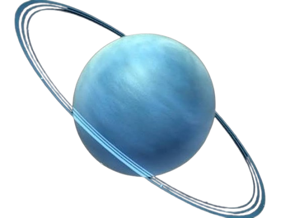

Depois de atravessar tantos planetas, Zeus finalmente chegou a Urano. Um sinal misterioso está vindo de uma estação espacial. Será que seus amigos estão lá?
INICIAR MISSÃO
Urano possui uma inclinação de aproximadamente 98°, fazendo com que pareça girar de lado.
O planeta possui 13 anéis conhecidos, formados por partículas escuras de poeira e rochas.
Urano é o planeta mais frio do Sistema Solar, com temperaturas que podem chegar a -224 °C.
Sua cor está relacionada ao metano presente na atmosfera, que absorve a luz vermelha.
Urano é formado principalmente por materiais como água, amônia e metano.
Possui várias luas conhecidas, incluindo Miranda, Ariel, Umbriel, Titânia e Oberon.
Zeus pousa sua nave próximo a uma estação espacial congelada. Ao entrar, percebe que o local ainda possui energia e encontra um painel de segurança bloqueando uma grande porta.
Do outro lado, parece haver alguém. Zeus escuta vozes conhecidas e percebe que pode estar muito perto de encontrar seus amigos.
Descubra a sequência correta para abrir a porta e encontrar seus amigos.
O painel possui quatro símbolos. Você precisará descobrir a ordem correta para liberar a porta da estação.
Esse não é o primeiro símbolo. Leia a pista novamente e tente outra vez.
TENTAR NOVAMENTEEsse não é o segundo símbolo. Volte ao início e tente novamente.
TENTAR NOVAMENTEEsse não é o terceiro símbolo. Volte ao início e tente novamente.
TENTAR NOVAMENTEEsse não é o último símbolo. Volte ao início e tente novamente.
TENTAR NOVAMENTEA porta da estação começa a se abrir. Zeus entra rapidamente e encontra seus amigos desaparecidos!
Depois de tantos planetas e desafios, finalmente todos estão reunidos novamente!
VER TODOS OS GATINHOS